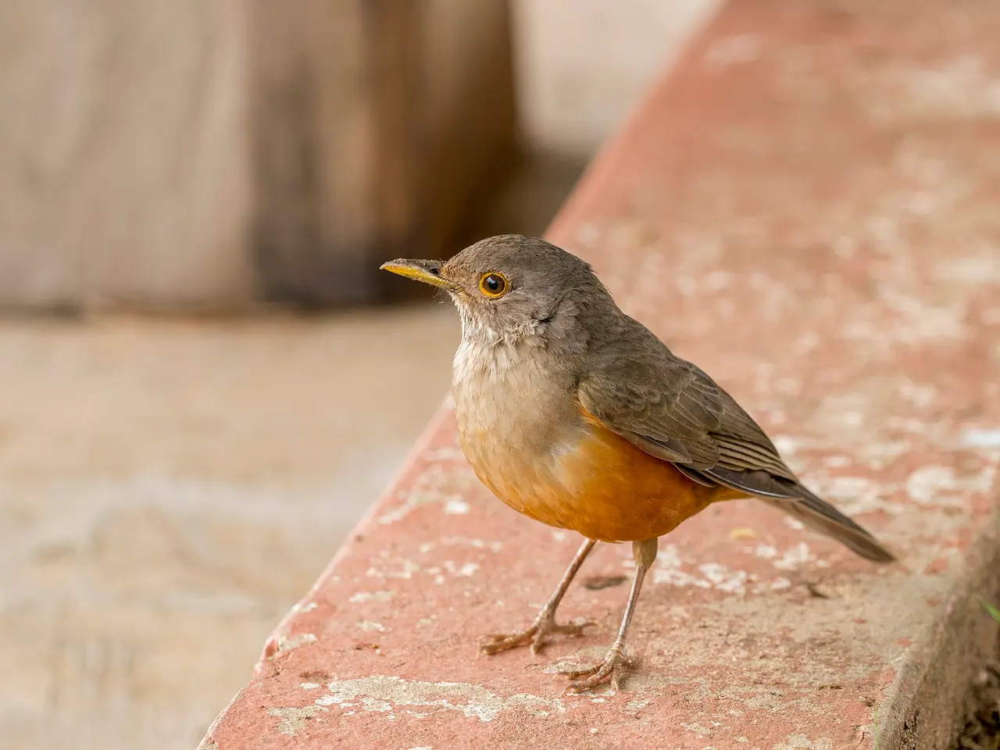

Módulo 1 Aula 1
O que é uma ave?
Entre os animais que vivem hoje, só as aves têm penas. Esse é o ponto de partida do curso.
- Os cinco traços que definem uma ave
- As partes do corpo, vistas numa ave de perto
- Como saber se um animal é ave ou não

Ave da aula
Sabiá-laranjeira Turdus rufiventris
Cinco traços que definem uma ave
Não existe uma característica única que baste. É a combinação dos cinco traços abaixo que faz de um animal uma ave. O sabiá-laranjeira, ave-símbolo do Brasil[6], tem todos.
Bico, sem dentes
O bico é feito de osso coberto por . As aves de hoje não têm dentes[3].
Ovos de casca dura
Toda ave nasce de um ovo com casca rígida, posto fora do corpo da mãe e mantido aquecido até o filhote nascer[1].
Sangue quente
A ave é : produz calor por dentro. Por isso ela gasta muita energia e come com frequência[4].
Esqueleto leve
Muitos ossos são finos e ocos, reforçados por dentro. É a base do voo e é o assunto da aula 3. A ave é, ainda, um , como nós.
Uma ave de perto
Vamos usar o sabiá para reconhecer as partes principais do corpo. Você não precisa decorar nada agora: os nomes técnicos vêm na aula 2.
Toque nos pontos da foto para ver o que cada parte faz.
Escolha um ponto
O nome e a função da parte aparecem aqui.
É ave ou não é?
Usar asas ou voar não basta para ser ave. Teste o que você aprendeu nos quatro casos abaixo.
Morcego
Pinguim
Ema
Libélula
Palavras novas
Teste rápido
Sem nota. Se errar, tente de novo.
Qual característica é exclusiva das aves?
O que significa dizer que a ave tem “sangue quente”?
Do que é feito o bico de uma ave?
Referências e leitura complementar
Onde conferir o que foi dito nesta aula. Os números entre colchetes no texto levam a estas fontes. Os links abrem em outra aba.
- What are the unique characteristics of birds?Encyclopaedia Britannica · inglêsResumo dos traços que definem as aves: penas, sangue quente, ovo de casca dura, coração de quatro câmaras.
- Everything You Need To Know About FeathersBird Academy · Cornell Lab of Ornithology · inglêsEstrutura da pena: cálamo, raque, barbas e bárbulas, e os tipos de pena.
- Morphology of the AvesUCMP · Universidade da Califórnia, Berkeley · inglêsBico sem dentes, ossos ocos ligados aos sacos aéreos, quilha do esterno e fúrcula.
- Warm-bloodednessEncyclopaedia Britannica · inglêsO que é endotermia e como os animais mantêm a temperatura do corpo.
- BatEncyclopaedia Britannica · inglêsMorcegos são mamíferos, com pelos, e as fêmeas amamentam os filhotes.
- Sabiá-laranjeiraWikipédia · portuguêsA espécie e o decreto de 2002 que a indica como representante das aves brasileiras.
- Listas de Aves do BrasilCBRO · Comitê Brasileiro de Registros Ornitológicos · português · leitura complementarA lista oficial e atualizada das aves registradas no Brasil.
Os endereços foram abertos e conferidos em 29/09/2026. Alguns sites de revistas científicas e de órgãos oficiais exigem verificação humana e não puderam ser testados por robô. Sites externos podem mudar ou sair do ar.
Para levar
Em três frases
- Ave é o animal com penas, bico sem dentes, ovos de casca dura, sangue quente e esqueleto leve.
- Voar não é o que define a ave: o pinguim e a ema não voam e são aves.
- O corpo da ave tem partes que reencontraremos em toda aula: bico, asa, cauda e pés.